Exploring Sobol indices and randomness with Sobol4R
Frédéric Bertrand
Cedric, Cnam, Parisfrederic.bertrand@lecnam.net
2025-11-26
Source:vignettes/Sobol_RV_five_examples.Rmd
Sobol_RV_five_examples.RmdContext and non random case
Test case: the non monotonic Sobol g function.
The method of Sobol requires two samples. In the reference case there are eight variables, all following the uniform distribution on [0,1].
n <- 50000
p <- 8
X1_1 <- data.frame(matrix(runif(p * n), nrow = n))
X2_1 <- data.frame(matrix(runif(p * n), nrow = n))
set.seed(4669)
gensol1 <- sobol4r_design(
X1 = X1_1,
X2 = X2_1,
order = 2,
nboot = 100
)
Y1 <- sobol_g_function(gensol1$X)
x1 <- sensitivity::tell(gensol1, Y1)
print(x1)
#>
#> Call:
#> sensitivity::sobol(model = NULL, X1 = X1, X2 = X2, order = order, nboot = nboot)
#>
#> Model runs: 1850000
#>
#> Sobol indices
#> original bias std. error min. c.i. max. c.i.
#> X1 0.716687957 -0.0007506201 0.007568642 0.704904998 0.734553717
#> X2 0.194138905 0.0018867840 0.008564673 0.176095217 0.207794424
#> X3 0.039178654 0.0013086099 0.009998164 0.019745844 0.059106198
#> X4 0.021909025 0.0015247991 0.009997951 0.003894803 0.041782281
#> X5 0.015876506 0.0013797535 0.009862420 -0.001965988 0.034335093
#> X6 0.015293824 0.0013589275 0.009871009 -0.002615684 0.033739384
#> X7 0.015450641 0.0013999418 0.009830706 -0.002197353 0.033817776
#> X8 0.015562056 0.0013687406 0.009844287 -0.002136192 0.033977458
#> X1*X2 0.041788726 -0.0014391412 0.011696617 0.023128993 0.063640694
#> X1*X3 -0.004937621 -0.0013769088 0.010189394 -0.024998516 0.014213072
#> X1*X4 -0.012526950 -0.0013056630 0.009838578 -0.031409287 0.005563374
#> X1*X5 -0.015425841 -0.0013720959 0.009837824 -0.033839972 0.002382693
#> X1*X6 -0.015508012 -0.0013759868 0.009852874 -0.034022908 0.002314938
#> X1*X7 -0.015453405 -0.0013748933 0.009855058 -0.033903651 0.002345500
#> X1*X8 -0.015234479 -0.0013635338 0.009858249 -0.033729585 0.002642363
#> X2*X3 -0.013781931 -0.0013834260 0.010083740 -0.033094752 0.004612368
#> X2*X4 -0.015114158 -0.0013642767 0.009859457 -0.032856631 0.002174834
#> X2*X5 -0.015325040 -0.0013700765 0.009842260 -0.033751492 0.002433855
#> X2*X6 -0.015426095 -0.0013705172 0.009860968 -0.033834409 0.002380184
#> X2*X7 -0.015498387 -0.0013703407 0.009857096 -0.033982323 0.002313440
#> X2*X8 -0.015379072 -0.0013761200 0.009857861 -0.033867275 0.002451179
#> X3*X4 -0.015295522 -0.0013685560 0.009851201 -0.033647569 0.002410603
#> X3*X5 -0.015392995 -0.0013743295 0.009853136 -0.033839855 0.002394021
#> X3*X6 -0.015422268 -0.0013763614 0.009854233 -0.033896298 0.002353486
#> X3*X7 -0.015404783 -0.0013725225 0.009855842 -0.033875858 0.002390569
#> X3*X8 -0.015399436 -0.0013759847 0.009851659 -0.033854408 0.002385207
#> X4*X5 -0.015401983 -0.0013752728 0.009854837 -0.033854638 0.002388293
#> X4*X6 -0.015406381 -0.0013761556 0.009853664 -0.033862786 0.002374637
#> X4*X7 -0.015397762 -0.0013744247 0.009853931 -0.033855040 0.002387126
#> X4*X8 -0.015416027 -0.0013755172 0.009852570 -0.033867548 0.002359941
#> X5*X6 -0.015409013 -0.0013758226 0.009853706 -0.033857819 0.002379628
#> X5*X7 -0.015408390 -0.0013757150 0.009853857 -0.033858408 0.002379668
#> X5*X8 -0.015407502 -0.0013757377 0.009853607 -0.033855348 0.002380915
#> X6*X7 -0.015409257 -0.0013758069 0.009853620 -0.033857453 0.002378392
#> X6*X8 -0.015406676 -0.0013758051 0.009853758 -0.033853956 0.002382148
#> X7*X8 -0.015408348 -0.0013757551 0.009853896 -0.033858828 0.002380025
Sobol4R::autoplot(x1, ncol = 1)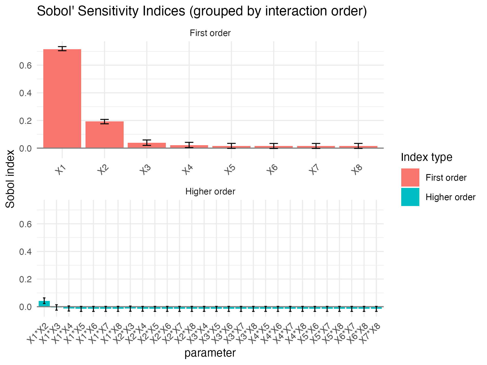
ex1_results <- sobol_example_g_deterministic()
print(ex1_results)
#>
#> Call:
#> sensitivity::sobol(model = NULL, X1 = X1, X2 = X2, order = order, nboot = nboot)
#>
#> Model runs: 1850000
#>
#> Sobol indices
#> original bias std. error min. c.i. max. c.i.
#> X1 0.7245997507 1.318649e-04 0.006865099 0.711583661 0.73855259
#> X2 0.1852412158 -6.379462e-04 0.009725422 0.163919891 0.20792418
#> X3 0.0321041221 -3.943572e-04 0.009939738 0.012874359 0.05265936
#> X4 0.0150373622 -3.716233e-04 0.009571601 -0.002765501 0.03471590
#> X5 0.0073639355 -5.240577e-04 0.009690646 -0.010879190 0.02837068
#> X6 0.0073304377 -5.140176e-04 0.009697496 -0.010964117 0.02838793
#> X7 0.0072934310 -5.369366e-04 0.009679297 -0.010989042 0.02830642
#> X8 0.0070625492 -5.292390e-04 0.009661789 -0.010934969 0.02789333
#> X1*X2 0.0459216617 8.939108e-05 0.010932749 0.026094148 0.06869013
#> X1*X3 -0.0006600465 6.814819e-04 0.010010933 -0.022980303 0.01844932
#> X1*X4 -0.0056037444 4.901684e-04 0.009860488 -0.026644889 0.01263961
#> X1*X5 -0.0070363484 5.187023e-04 0.009676301 -0.027999214 0.01120229
#> X1*X6 -0.0071411552 5.319393e-04 0.009690812 -0.028192638 0.01110205
#> X1*X7 -0.0072518362 5.303046e-04 0.009672163 -0.028265971 0.01093724
#> X1*X8 -0.0070777721 5.186929e-04 0.009676468 -0.028051234 0.01119551
#> X2*X3 -0.0051274794 5.279125e-04 0.009702252 -0.026495177 0.01365939
#> X2*X4 -0.0060860874 5.210190e-04 0.009681757 -0.027207071 0.01195456
#> X2*X5 -0.0071063957 5.147476e-04 0.009680715 -0.028066083 0.01115791
#> X2*X6 -0.0071163219 5.256144e-04 0.009679855 -0.028098511 0.01109647
#> X2*X7 -0.0070620281 5.299198e-04 0.009678650 -0.028017158 0.01116083
#> X2*X8 -0.0071567767 5.166541e-04 0.009686683 -0.028157933 0.01108562
#> X3*X4 -0.0073116996 5.314332e-04 0.009671714 -0.028275534 0.01102687
#> X3*X5 -0.0071206761 5.265249e-04 0.009682280 -0.028100457 0.01114042
#> X3*X6 -0.0071350887 5.241734e-04 0.009680955 -0.028110685 0.01112504
#> X3*X7 -0.0071632203 5.264482e-04 0.009681046 -0.028151981 0.01111060
#> X3*X8 -0.0071109279 5.241054e-04 0.009682418 -0.028109093 0.01117038
#> X4*X5 -0.0071437469 5.248274e-04 0.009679986 -0.028127750 0.01111732
#> X4*X6 -0.0071379129 5.276560e-04 0.009680886 -0.028127090 0.01112126
#> X4*X7 -0.0071596546 5.255998e-04 0.009681341 -0.028150168 0.01109302
#> X4*X8 -0.0071300368 5.260610e-04 0.009682262 -0.028120750 0.01114550
#> X5*X6 -0.0071348129 5.263360e-04 0.009681340 -0.028121862 0.01112445
#> X5*X7 -0.0071382804 5.262539e-04 0.009681217 -0.028124558 0.01111832
#> X5*X8 -0.0071340327 5.262561e-04 0.009681110 -0.028120227 0.01112288
#> X6*X7 -0.0071357204 5.261516e-04 0.009681295 -0.028121656 0.01112018
#> X6*X8 -0.0071339651 5.264348e-04 0.009681123 -0.028121004 0.01112360
#> X7*X8 -0.0071370385 5.263348e-04 0.009681299 -0.028124733 0.01112035
Sobol4R::autoplot(ex1_results, ncol = 1)Sobol and randomness I: random effect on output variable
Generate data
n <- 50000
X1_r1 <- data.frame(
C1 = runif(n),
C2 = runif(n)
)
X2_r1 <- data.frame(
C1 = runif(n),
C2 = runif(n)
)Three settings, two input variables
The deterministic model is sobol4r_g2. The noisy version
with Gaussian noise N(0,1) is sobol4r_g2_noise_const. The
quantity of interest based on the mean over replications is
sobol4r_g2_noise_const_qoi_mean.
set.seed(4669)
gensol2 <- sobol4r_design(
X1 = X1_r1,
X2 = X2_r1,
order = 2,
nboot = 100
)
Y2 <- sobol_g2_function(gensol2$X)
Y3 <- sobol_g2_additive_noise(gensol2$X)
Y4 <- sobol_g2_qoi_mean(gensol2$X, nrep = 1000)
x2 <- sensitivity::tell(gensol2, Y2)
x3 <- sensitivity::tell(gensol2, Y3)
x4 <- sensitivity::tell(gensol2, Y4)
print(x2)
#>
#> Call:
#> sensitivity::sobol(model = NULL, X1 = X1, X2 = X2, order = order, nboot = nboot)
#>
#> Model runs: 200000
#>
#> Sobol indices
#> original bias std. error min. c.i. max. c.i.
#> C1 0.75294715 -0.0020757531 0.007497918 0.73603349 0.7706049
#> C2 0.18208419 0.0001224554 0.008328073 0.16719942 0.1969894
#> C1*C2 0.06501351 0.0019533167 0.011592068 0.04149586 0.0885798
print(x3)
#>
#> Call:
#> sensitivity::sobol(model = NULL, X1 = X1, X2 = X2, order = order, nboot = nboot)
#>
#> Model runs: 200000
#>
#> Sobol indices
#> original bias std. error min. c.i. max. c.i.
#> C1 0.22708608 -0.0009503416 0.006064791 0.218750413 0.24323115
#> C2 0.05211258 -0.0005337665 0.006966395 0.038261623 0.06533689
#> C1*C2 0.01970182 0.0010269693 0.010380381 -0.002741708 0.04006086
print(x4)
#>
#> Call:
#> sensitivity::sobol(model = NULL, X1 = X1, X2 = X2, order = order, nboot = nboot)
#>
#> Model runs: 200000
#>
#> Sobol indices
#> original bias std. error min. c.i. max. c.i.
#> C1 0.75117252 0.0008298031 0.006824511 0.73696397 0.7653366
#> C2 0.18248043 -0.0017367430 0.009332159 0.16508020 0.2069736
#> C1*C2 0.06457593 0.0009315934 0.012032118 0.04010188 0.0874222
Sobol4R::autoplot(x2)
Sobol4R::autoplot(x3)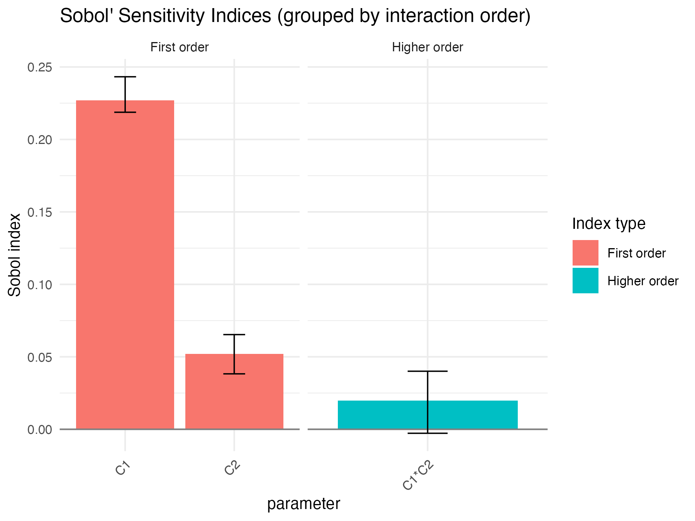
Sobol4R::autoplot(x4)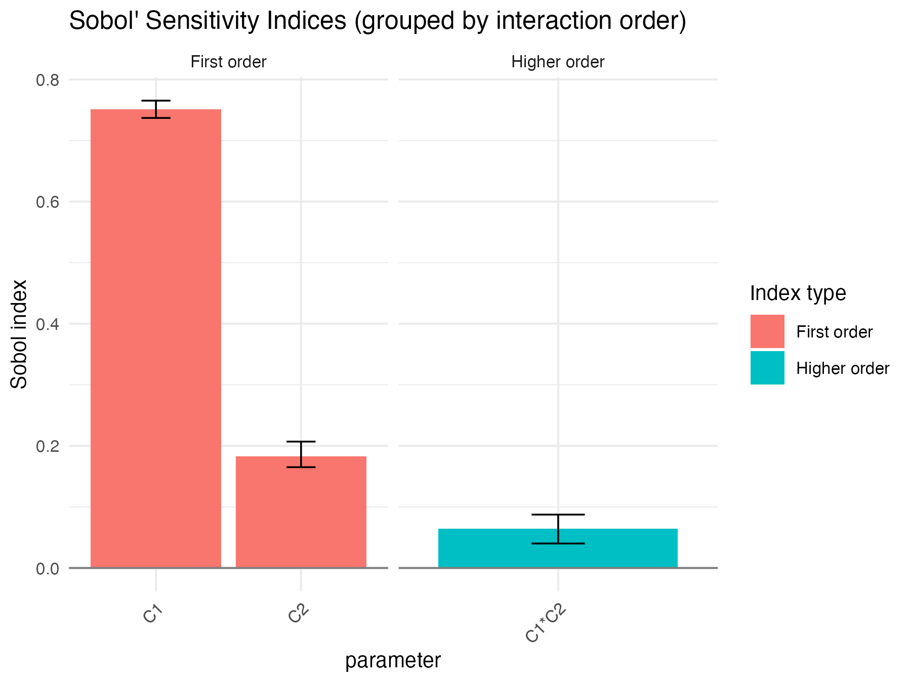
ex2_results <- sobol_example_random_output()
ex2_results
#> $x_det
#>
#> Call:
#> sensitivity::sobol(model = NULL, X1 = X1, X2 = X2, order = order, nboot = nboot)
#>
#> Model runs: 200000
#>
#> Sobol indices
#> original bias std. error min. c.i. max. c.i.
#> C1 0.74720121 -0.0009978294 0.006004805 0.73615388 0.76091767
#> C2 0.18170442 -0.0018454055 0.010212362 0.16292464 0.20101671
#> C1*C2 0.07113984 0.0028432598 0.013149485 0.04316529 0.09515417
#>
#> $x_noise
#>
#> Call:
#> sensitivity::sobol(model = NULL, X1 = X1, X2 = X2, order = order, nboot = nboot)
#>
#> Model runs: 200000
#>
#> Sobol indices
#> original bias std. error min. c.i. max. c.i.
#> C1 0.22767375 -0.0007876749 0.006188751 0.215410324 0.24349360
#> C2 0.05176659 0.0002594516 0.006870501 0.037425458 0.06510662
#> C1*C2 0.02423485 -0.0004615309 0.010009320 0.005753248 0.04323218
#>
#> $x_qoi
#>
#> Call:
#> sensitivity::sobol(model = NULL, X1 = X1, X2 = X2, order = order, nboot = nboot)
#>
#> Model runs: 200000
#>
#> Sobol indices
#> original bias std. error min. c.i. max. c.i.
#> C1 0.74586708 -0.0008082631 0.006456912 0.73317476 0.76085938
#> C2 0.18166520 -0.0004252401 0.008343277 0.16630470 0.19952893
#> C1*C2 0.07020214 0.0012650855 0.010728603 0.04892424 0.09107463
Sobol4R::autoplot(ex2_results$x_det)
Sobol4R::autoplot(ex2_results$x_noise)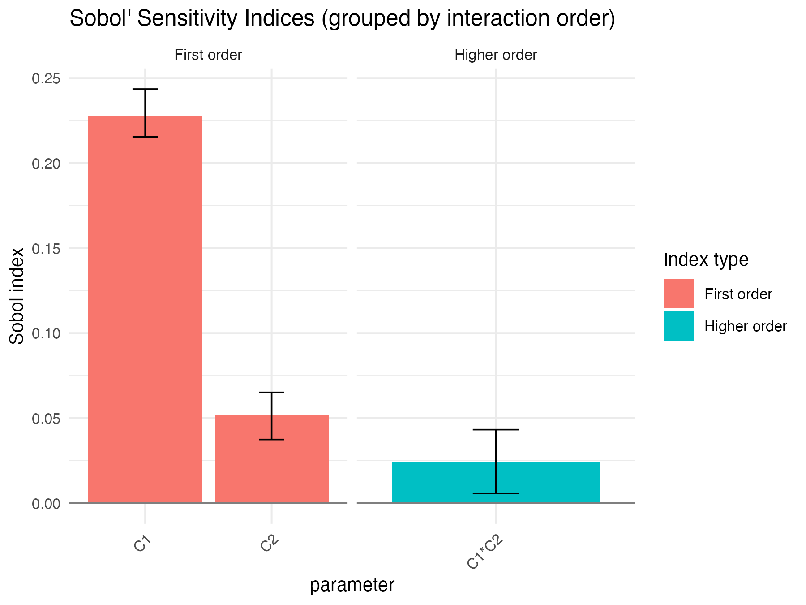
Sobol4R::autoplot(ex2_results$x_qoi)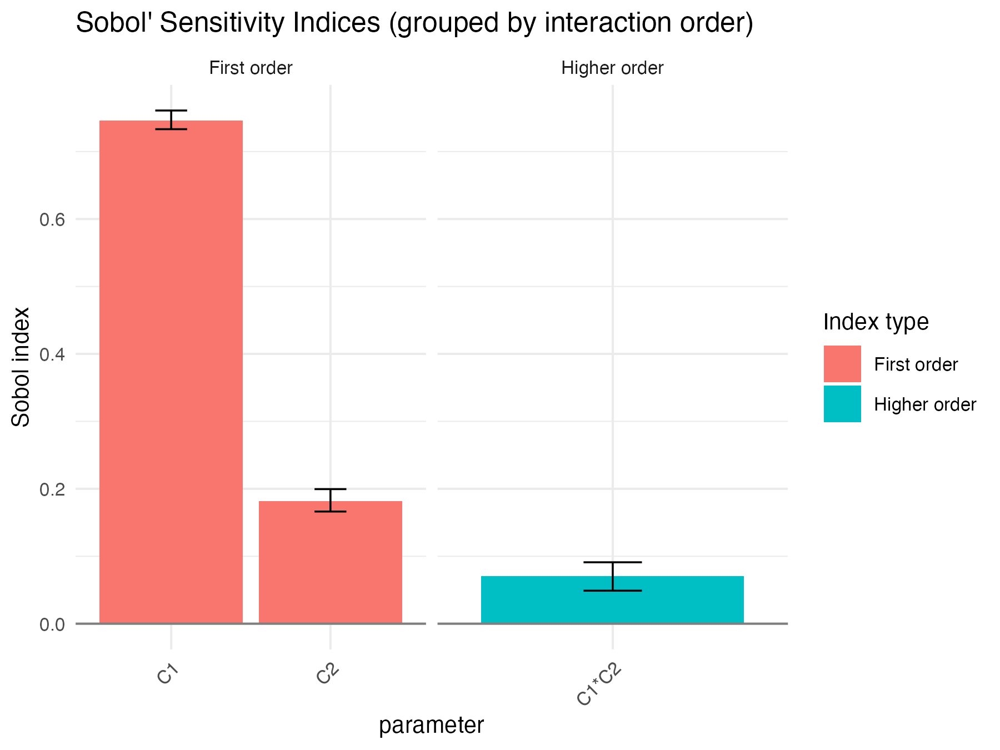
rm(ex2_results)Sobol and randomness II: large random effect depending on an input variable
We keep the previously generated values for C1 and C2 and add a third
variable C3 distributed as runif(n, min = 1, max = 100).
The third variable controls the mean of the Gaussian noise.
n <- 50000
X1_r2 <- data.frame(
C1 = X1_r1$C1,
C2 = X1_r1$C2,
C3 = runif(n, min = 1, max = 100)
)
X2_r2 <- data.frame(
C1 = X2_r1$C1,
C2 = X2_r1$C2,
C3 = runif(n, min = 1, max = 100)
)
head(X1_r1)
#> C1 C2
#> 1 0.01651413 0.8730539
#> 2 0.41411830 0.9350212
#> 3 0.56474556 0.2305029
#> 4 0.19459702 0.5419644
#> 5 0.14134094 0.7620684
#> 6 0.80140480 0.7306451
head(X1_r2)
#> C1 C2 C3
#> 1 0.01651413 0.8730539 91.158310
#> 2 0.41411830 0.9350212 94.475260
#> 3 0.56474556 0.2305029 18.569825
#> 4 0.19459702 0.5419644 27.675334
#> 5 0.14134094 0.7620684 95.994602
#> 6 0.80140480 0.7306451 6.472291
set.seed(4669)
gensol3 <- sobol4r_design(
X1 = X1_r2,
X2 = X2_r2,
order = 2,
nboot = 100
)
Y5 <- sobol_g2_with_covariate_noise(gensol3$X)
Y6 <- sobol_g2_qoi_covariate_mean(gensol3$X, nrep = 1000)
print(x5)
#>
#> Call:
#> sensitivity::sobol(model = NULL, X1 = X1, X2 = X2, order = order, nboot = nboot)
#>
#> Model runs: 350000
#>
#> Sobol indices
#> original bias std. error min. c.i. max. c.i.
#> C1 0.009103922 -7.678676e-04 0.0130427012 -0.01411765 0.03609438
#> C2 0.008522672 -8.213264e-04 0.0131436196 -0.01523813 0.03560910
#> C3 0.997881023 1.842165e-05 0.0005691673 0.99664601 0.99899637
#> C1*C2 -0.008632762 7.862693e-04 0.0130956857 -0.03574270 0.01484363
#> C1*C3 -0.008739565 7.650162e-04 0.0130892998 -0.03539612 0.01503036
#> C2*C3 -0.009249140 7.983501e-04 0.0131952308 -0.03644359 0.01477755
print(x6)
#>
#> Call:
#> sensitivity::sobol(model = NULL, X1 = X1, X2 = X2, order = order, nboot = nboot)
#>
#> Model runs: 350000
#>
#> Sobol indices
#> original bias std. error min. c.i. max. c.i.
#> C1 0.009294127 -1.646939e-03 0.0119136613 -0.01048769 0.03632675
#> C2 0.008880986 -1.660606e-03 0.0119297217 -0.01065891 0.03604884
#> C3 0.999598476 -5.438879e-05 0.0002670567 0.99915305 1.00020923
#> C1*C2 -0.008767366 1.686318e-03 0.0119169108 -0.03594583 0.01083755
#> C1*C3 -0.008944792 1.678635e-03 0.0119154037 -0.03613794 0.01063203
#> C2*C3 -0.008945624 1.673590e-03 0.0119138645 -0.03611414 0.01064228
Sobol4R::autoplot(x5)
Sobol4R::autoplot(x6)
ex3_results <- sobol_example_covariate_large()
ex3_results
#> $x_single
#>
#> Call:
#> sensitivity::sobol(model = NULL, X1 = X1, X2 = X2, order = order, nboot = nboot)
#>
#> Model runs: 350000
#>
#> Sobol indices
#> original bias std. error min. c.i. max. c.i.
#> C1 -0.003814153 2.616697e-03 0.0125631569 -0.02644550 0.02762452
#> C2 -0.003825927 2.659501e-03 0.0125560080 -0.02648521 0.02766639
#> C3 0.997455455 -7.568744e-06 0.0005209994 0.99636991 0.99856976
#> C1*C2 0.003820640 -2.669221e-03 0.0125262397 -0.02766157 0.02691652
#> C1*C3 0.004519403 -2.631650e-03 0.0125653953 -0.02710749 0.02681053
#> C2*C3 0.004166187 -2.636226e-03 0.0126073022 -0.02770878 0.02685501
#>
#> $x_qoi
#>
#> Call:
#> sensitivity::sobol(model = NULL, X1 = X1, X2 = X2, order = order, nboot = nboot)
#>
#> Model runs: 350000
#>
#> Sobol indices
#> original bias std. error min. c.i. max. c.i.
#> C1 -0.003563336 5.722503e-04 0.0113799469 -0.02940469 0.01662036
#> C2 -0.004120807 5.684572e-04 0.0114033647 -0.02959945 0.01580905
#> C3 0.999489107 1.507974e-05 0.0003031387 0.99874021 1.00009533
#> C1*C2 0.004119381 -5.850545e-04 0.0113790237 -0.01582253 0.02971439
#> C1*C3 0.004146628 -5.696827e-04 0.0113793001 -0.01588901 0.02971427
#> C2*C3 0.004119570 -5.706827e-04 0.0113799985 -0.01592504 0.02970237
Sobol4R::autoplot(ex3_results$x_single)
Sobol4R::autoplot(ex3_results$x_qoi)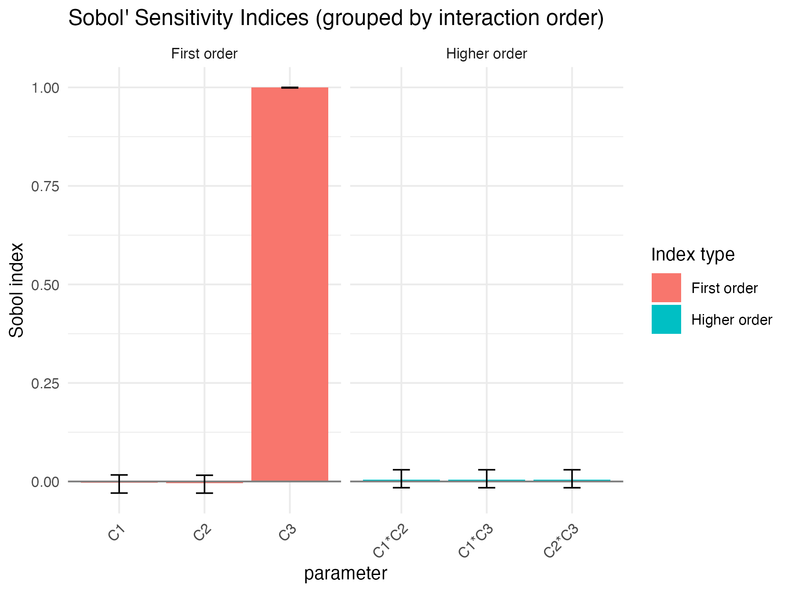
rm(ex3_results)Sobol and randomness III: slight random effect depending on an input variable
We now take a third input C3 distributed as
runif(n, min = 1, max = 1.5), which induces a much smaller
range for the mean of the noise.
n <- 50000
X1_r3 <- data.frame(
C1 = X1_r1$C1,
C2 = X1_r1$C2,
C3 = runif(n, min = 1, max = 1.5)
)
X2_r3 <- data.frame(
C1 = X2_r1$C1,
C2 = X2_r1$C2,
C3 = runif(n, min = 1, max = 1.5)
)
set.seed(4669)
gensol4 <- sobol4r_design(
X1 = X1_r3,
X2 = X2_r3,
order = 2,
nboot = 100
)
Y7 <- sobol_g2_with_covariate_noise(gensol4$X)
Y8 <- sobol_g2_qoi_covariate_mean(gensol4$X, nrep = 1000)
print(x7)
#>
#> Call:
#> sensitivity::sobol(model = NULL, X1 = X1, X2 = X2, order = order, nboot = nboot)
#>
#> Model runs: 350000
#>
#> Sobol indices
#> original bias std. error min. c.i. max. c.i.
#> C1 0.2179768074 0.0016590219 0.01191680 0.191936435 0.23884604
#> C2 0.0438787602 0.0002946957 0.01299949 0.014190486 0.06778009
#> C3 0.0012709850 0.0009372044 0.01300281 -0.027475579 0.02831144
#> C1*C2 0.0291744931 -0.0003934838 0.01952600 -0.002590527 0.07333499
#> C1*C3 0.0048315721 -0.0017972989 0.01764631 -0.029694591 0.04260449
#> C2*C3 -0.0001193627 -0.0013974652 0.01639057 -0.030860059 0.04118317
print(x8)
#>
#> Call:
#> sensitivity::sobol(model = NULL, X1 = X1, X2 = X2, order = order, nboot = nboot)
#>
#> Model runs: 350000
#>
#> Sobol indices
#> original bias std. error min. c.i. max. c.i.
#> C1 0.722991696 -0.002288327 0.01354553 0.699849145 0.75130274
#> C2 0.172823871 -0.003699652 0.01778973 0.130371959 0.21764120
#> C3 0.051463767 -0.003001862 0.01984986 0.011515221 0.09988415
#> C1*C2 0.060605565 0.004948431 0.02333160 0.006445535 0.10587228
#> C1*C3 -0.009441546 0.004124036 0.02096216 -0.060569278 0.03514172
#> C2*C3 -0.009732205 0.004024467 0.02083542 -0.060257137 0.03574496
Sobol4R::autoplot(x7)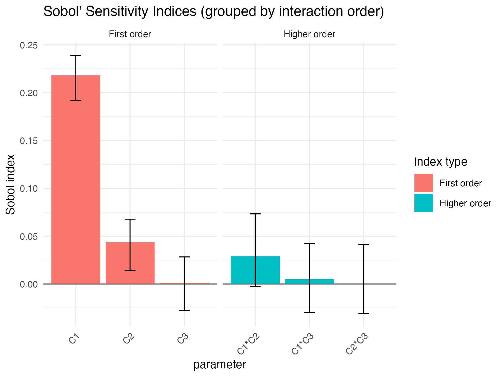
Sobol4R::autoplot(x8)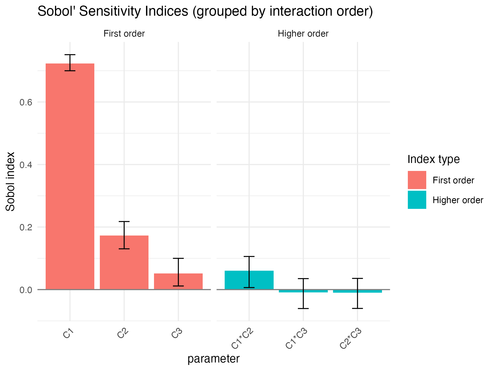
ex4_results <- sobol_example_covariate_small()
ex4_results
#> $x_single
#>
#> Call:
#> sensitivity::sobol(model = NULL, X1 = X1, X2 = X2, order = order, nboot = nboot)
#>
#> Model runs: 350000
#>
#> Sobol indices
#> original bias std. error min. c.i. max. c.i.
#> C1 0.224208081 0.0012907769 0.01092529 0.20087926 0.24485842
#> C2 0.047462732 0.0020584734 0.01175320 0.02042534 0.06960328
#> C3 -0.002896607 -0.0007483782 0.01198692 -0.02880861 0.02251407
#> C1*C2 0.013175351 -0.0025822109 0.01817007 -0.01795887 0.05058618
#> C1*C3 0.004942585 -0.0008555590 0.01442329 -0.02767290 0.03497922
#> C2*C3 0.013227984 -0.0021602752 0.01718477 -0.02285421 0.05404896
#>
#> $x_qoi
#>
#> Call:
#> sensitivity::sobol(model = NULL, X1 = X1, X2 = X2, order = order, nboot = nboot)
#>
#> Model runs: 350000
#>
#> Sobol indices
#> original bias std. error min. c.i. max. c.i.
#> C1 0.72703512 0.001086299 0.01254459 0.696919113 0.74615423
#> C2 0.17877081 0.002398711 0.02056101 0.137445422 0.22378421
#> C3 0.06021278 0.002800955 0.02095518 0.010950727 0.10250190
#> C1*C2 0.04336379 -0.003300194 0.02578821 -0.006492632 0.10452521
#> C1*C3 -0.01158259 -0.002973672 0.02095654 -0.056111648 0.03698519
#> C2*C3 -0.01328830 -0.003029785 0.02103294 -0.056820767 0.03617793
Sobol4R::autoplot(ex4_results$x_single)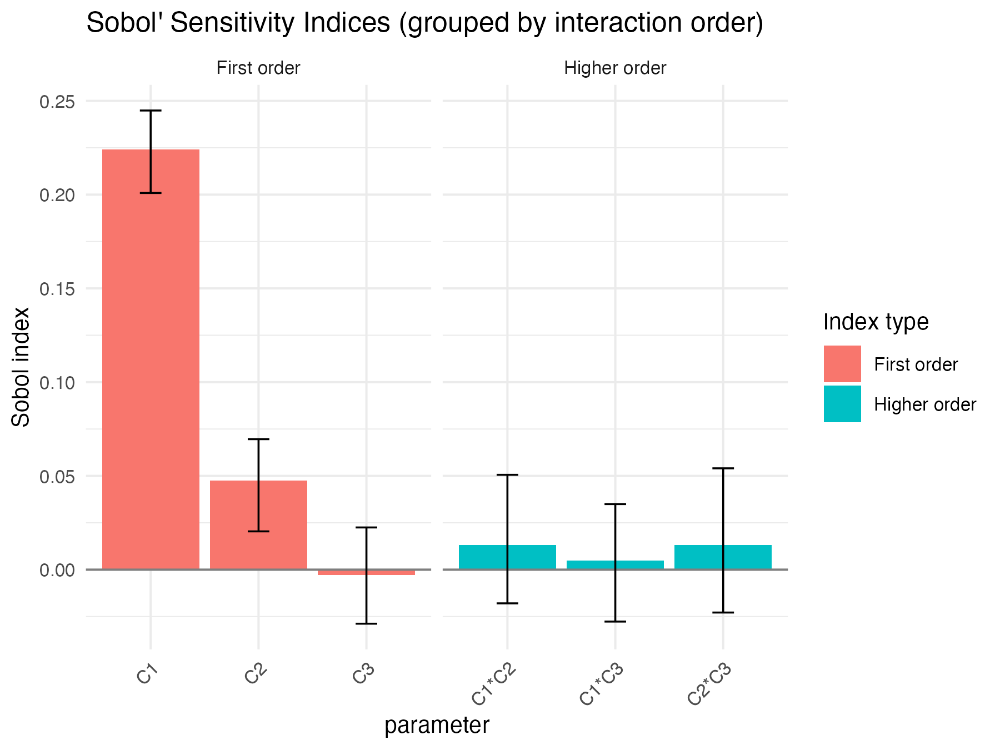
Sobol4R::autoplot(ex4_results$x_qoi)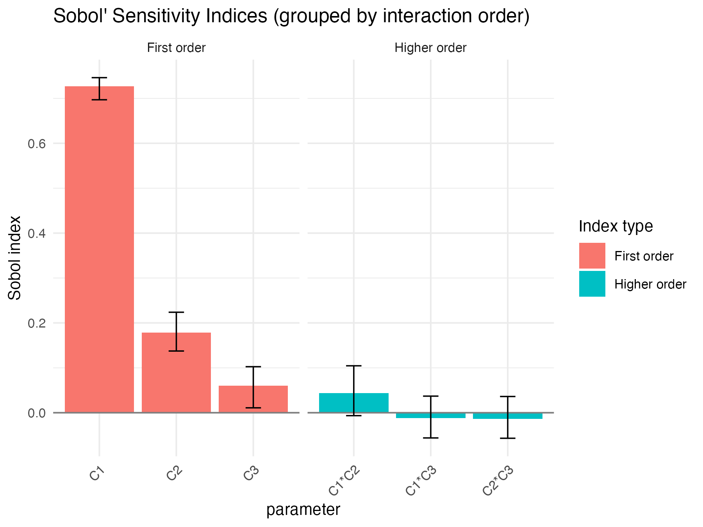
rm(ex4_results)Sobol and randomness IV: random variables with fixed distribution parameters
We now turn to the process model. The uncertain inputs are the distributional parameters of the individual unit model. The quantity of interest is the time needed to reach a given number of successes.
n <- 100
draw_params <- function(n) {
data.frame(t(replicate(
n,
c(
1 / runif(1, min = 20, max = 100),
1 / runif(1, min = 24, max = 2000),
1 / runif(1, min = 24, max = 120),
runif(1, min = 0.05, max = 0.3),
runif(1, min = 0.3, max = 0.7)
)
)))
}
X1_process <- draw_params(n)
X2_process <- draw_params(n)
set.seed(4669)
gensolp1 <- sobol4r_design(
X1 = X1_process,
X2 = X2_process,
order = 2,
nboot = 10
)
MM <- 50
Yp1 <- process_fun_row_wise(gensolp1$X, M = MM)
Yp2 <- process_fun_mean_to_M(gensolp1$X, M = MM, nrep = 10)
print(xp1)
#>
#> Call:
#> sensitivity::sobol(model = NULL, X1 = X1, X2 = X2, order = order, nboot = nboot)
#>
#> Model runs: 1600
#>
#> Sobol indices
#> original bias std. error min. c.i. max. c.i.
#> X1 0.380640729 0.07767979 0.1894920 -0.097930324 0.5209198
#> X2 -0.150879591 0.04386871 0.1879200 -0.465393405 0.1238071
#> X3 -0.184757024 0.04843735 0.1744516 -0.521524088 0.0152424
#> X4 0.116097870 0.09833723 0.3563339 -0.528448252 0.7365426
#> X5 0.008791147 0.06817654 0.1774518 -0.295431490 0.1728399
#> X1*X2 0.158754474 -0.08122172 0.1639657 0.003120269 0.4764820
#> X1*X3 0.132555870 -0.04669304 0.1412632 -0.011660608 0.4174054
#> X1*X4 0.265193836 -0.18009652 0.2617729 0.116915514 0.9749080
#> X1*X5 0.265493347 -0.12287799 0.2249038 0.092587933 0.6875449
#> X2*X3 0.181003438 -0.02326317 0.1711716 -0.030749675 0.4964048
#> X2*X4 0.164670426 -0.07306096 0.2230941 -0.109832214 0.5971065
#> X2*X5 0.185335203 -0.05811882 0.1953846 -0.060305511 0.5041611
#> X3*X4 0.166022145 -0.12110900 0.2730700 -0.069392144 0.8097652
#> X3*X5 0.145940968 -0.02318531 0.1665974 -0.036930422 0.4135084
#> X4*X5 0.075804433 -0.12414127 0.2503957 -0.175048932 0.6206474
print(xp2)
#>
#> Call:
#> sensitivity::sobol(model = NULL, X1 = X1, X2 = X2, order = order, nboot = nboot)
#>
#> Model runs: 1600
#>
#> Sobol indices
#> original bias std. error min. c.i. max. c.i.
#> X1 0.28552380 -0.004625494 0.1629528 -0.025026380 0.55227506
#> X2 -0.24716893 0.040791568 0.1852317 -0.620146362 -0.03364271
#> X3 -0.26283415 0.037441973 0.1828269 -0.624282749 -0.04747583
#> X4 -0.01106905 0.096595668 0.2098145 -0.650270117 0.11074470
#> X5 -0.06103096 0.010017363 0.1833158 -0.485658110 0.18766248
#> X1*X2 0.25974232 -0.042769338 0.1837775 0.050259571 0.61829376
#> X1*X3 0.24974787 -0.031849303 0.1708788 0.030397575 0.56635633
#> X1*X4 0.41897897 -0.053364983 0.2031692 0.118286391 0.79615594
#> X1*X5 0.30368407 -0.042679127 0.1907361 0.106453978 0.67277643
#> X2*X3 0.25732160 -0.045545310 0.1922518 0.033573909 0.63719282
#> X2*X4 0.25958598 -0.036109212 0.1916288 0.043772771 0.64322604
#> X2*X5 0.23572522 -0.038548190 0.1814357 0.032204334 0.58719703
#> X3*X4 0.26487283 -0.035018351 0.1725196 0.057452499 0.59887908
#> X3*X5 0.23794077 -0.038174061 0.1819509 0.024176202 0.61056056
#> X4*X5 0.28769557 -0.010575839 0.1950144 0.007294713 0.67587200
Sobol4R::autoplot(xp1)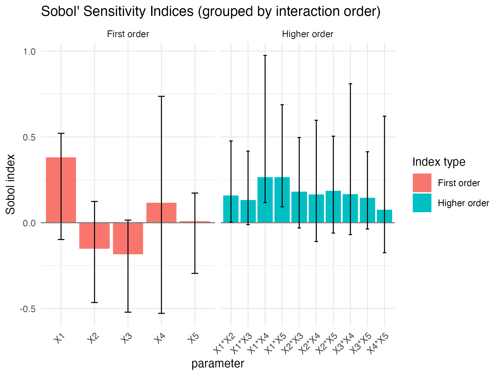
Sobol4R::autoplot(xp2)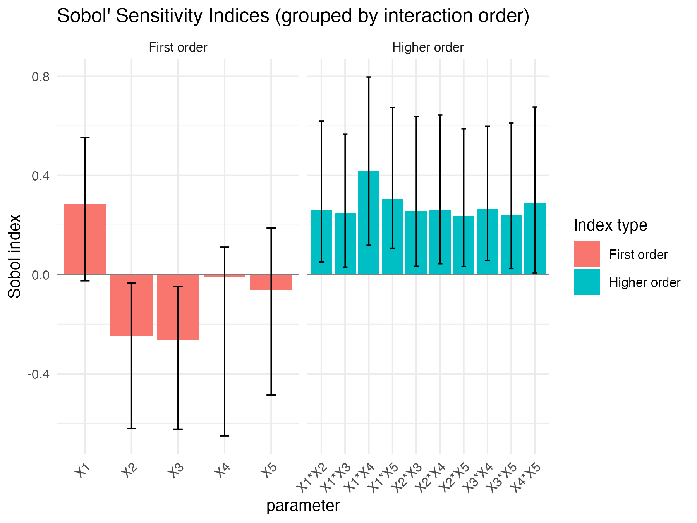
ex5_results <- sobol_example_process(order = 2)
ex5_results
#> $xp_single
#>
#> Call:
#> sensitivity::sobol(model = NULL, X1 = X1, X2 = X2, order = order, nboot = nboot)
#>
#> Model runs: 1600
#>
#> Sobol indices
#> original bias std. error min. c.i. max. c.i.
#> X1 0.46181191 0.038167121 0.1015640 0.33795565 0.6441305
#> X2 -0.13443272 0.037980913 0.2138908 -0.40535715 0.2940413
#> X3 -0.18784544 0.023277680 0.2225694 -0.36793913 0.3174555
#> X4 0.21539857 0.072332580 0.2527034 -0.15248847 0.6363769
#> X5 -0.08619123 0.023396235 0.2452619 -0.46074941 0.3720733
#> X1*X2 0.02965770 -0.054444661 0.2173068 -0.39209351 0.3442244
#> X1*X3 0.08115352 -0.026507036 0.2471829 -0.44675755 0.2948945
#> X1*X4 0.25096547 -0.023941343 0.3122315 -0.29482004 0.5329074
#> X1*X5 0.07311200 -0.120037030 0.3016293 -0.32207953 0.7162746
#> X2*X3 0.29404175 -0.008448518 0.1835533 -0.10975779 0.5326415
#> X2*X4 0.19699573 -0.039574605 0.2031531 -0.23590639 0.4058620
#> X2*X5 0.10531152 -0.041042052 0.2247256 -0.34402148 0.4190775
#> X3*X4 0.26918894 -0.040096061 0.1790315 -0.06567867 0.5182382
#> X3*X5 0.16210360 -0.015655387 0.2790156 -0.51100724 0.4133400
#> X4*X5 0.38191573 -0.050617095 0.2409964 -0.06624024 0.8481388
#>
#> $xp_qoi
#>
#> Call:
#> sensitivity::sobol(model = NULL, X1 = X1, X2 = X2, order = order, nboot = nboot)
#>
#> Model runs: 1600
#>
#> Sobol indices
#> original bias std. error min. c.i. max. c.i.
#> X1 0.43347914 -0.045976744 0.1845412 0.03886395 0.6400869
#> X2 -0.13026450 0.025599145 0.1872325 -0.34701259 0.1252922
#> X3 -0.11367591 0.021728558 0.1872673 -0.34349970 0.1328036
#> X4 0.32339355 0.031687132 0.1869744 0.01019336 0.5028818
#> X5 -0.03466342 0.012537251 0.2486094 -0.36356182 0.2985800
#> X1*X2 0.16423345 -0.035038812 0.2134525 -0.13986660 0.4309059
#> X1*X3 0.09499188 -0.013329557 0.1932010 -0.18465828 0.3481033
#> X1*X4 0.25284389 0.026563603 0.2528613 -0.21294867 0.5635387
#> X1*X5 0.08488172 -0.036702375 0.2161232 -0.16361182 0.4289381
#> X2*X3 0.09966690 -0.021597414 0.1964646 -0.16909004 0.3289556
#> X2*X4 0.14229878 -0.026644351 0.1867969 -0.12375633 0.3585671
#> X2*X5 0.13160860 -0.009979547 0.1886424 -0.12347665 0.3548174
#> X3*X4 0.10512121 -0.022765838 0.1848153 -0.13590512 0.3306203
#> X3*X5 0.09985455 -0.009063853 0.1981656 -0.15621906 0.3938962
#> X4*X5 0.16815214 -0.045139164 0.1669667 -0.03943283 0.4053975
Sobol4R::autoplot(ex5_results$xp_single)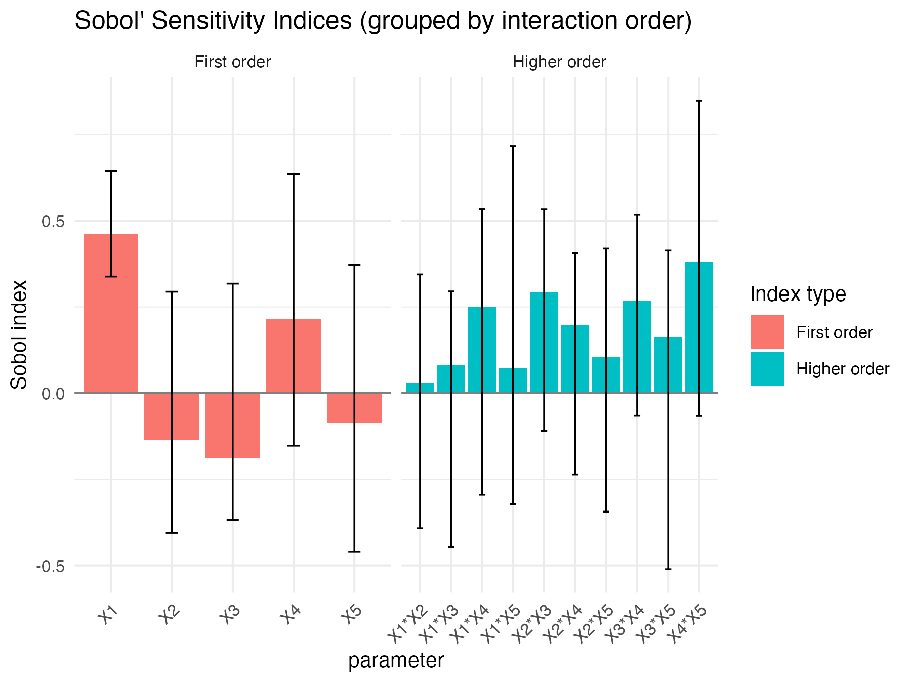
Sobol4R::autoplot(ex5_results$xp_qoi)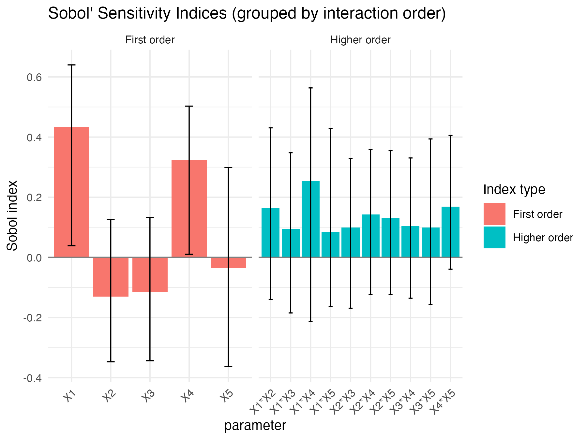
rm(ex5_results)